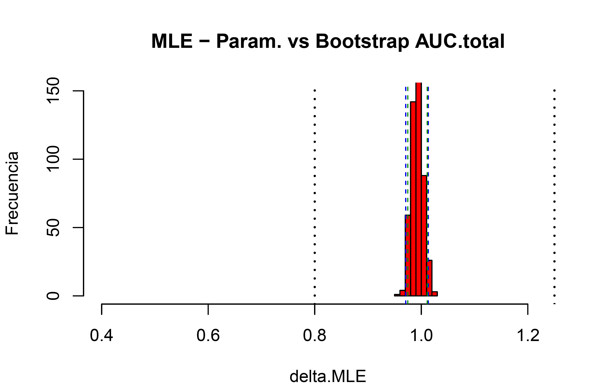

<!DOCTYPE html>
<html lang="es">
    <head>
        <title>Blog</title>
        <meta charset="UTF-8">
        <meta http-equiv="Content-type" content="text/html; charset=UTF-8">
        <meta name="viewport" content="width=device-width, initial-scale=1">
        <link rel="stylesheet" href="https://maxcdn.bootstrapcdn.com/bootstrap/4.5.0/css/bootstrap.min.css">  
        <script src="https://ajax.googleapis.com/ajax/libs/jquery/3.5.1/jquery.min.js"></script>
        <script src="https://cdnjs.cloudflare.com/ajax/libs/popper.js/1.16.0/umd/popper.min.js"></script>
        <script src="https://maxcdn.bootstrapcdn.com/bootstrap/4.5.0/js/bootstrap.min.js"></script>
        <link rel="stylesheet" type="text/css" href="../../CSS/original.css">
    </head>
</html>

<body>

    <div class="jumbotron jumbotron-fluid">
        <div class="container">
          <h1>Blog</h1>
        </div>
      </div>

      <div class="container">
        <h1><a href="BE-BD.html">Resultados BE-BD</a></h1>
        <p>En este proyecto se muestran algunas consideraciones de estudios de bioequivalencia clínicos aplicados a un ejemplo propuesto en curso de BE-BD.</p>
        
      </div>

      <div class="container">
        <h1><a href="#"> Coronavirus </a></h1>
        <p>En este módulo se discuten análisis sobre la terapia de medicamentos</p>
        
      </div>

      <div class="container">
        <p></p>
      </div>

      <!--Cuerpo de Sitio Web-->
      <div class="container-fluid bg-2 text-center">
    
        <h2>Quién soy yo?</h2>
        <p>Soy Químico Farmacéutico de la <abbr title="Universidad Nacional de Colombia">UNAL</abbr> con interés especial en <abbr title="Modelamiento y Simulación">M&S</abbr> aplicado a la terapéutica. </p>    
        <button type="button" class="btn btn-outline-primary" type="submit">Buscar</button>
      </div>

  
  <!--Pie de página-->
  <footer class="container-fluid bg-4 text-center">
    <p>Tema de Bootstrap Hecho por: <a href="https://danse1434.github.io/">Daniel Parra G.</a></p>
  </footer>
  

</body>